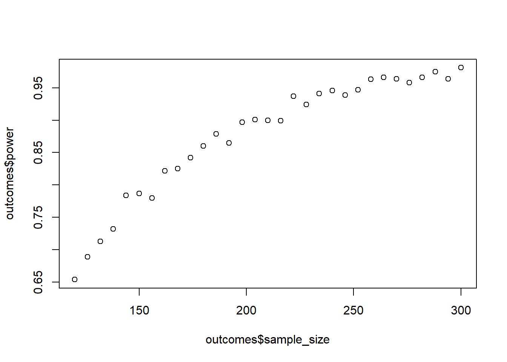
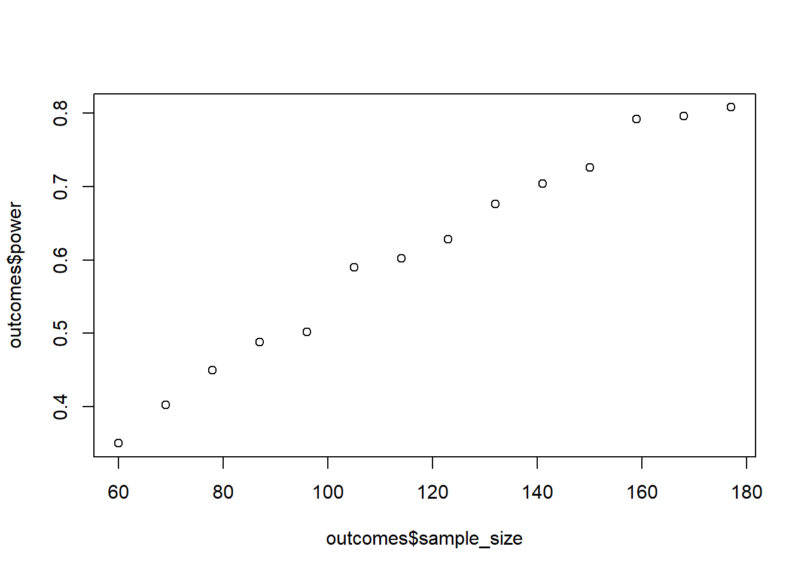
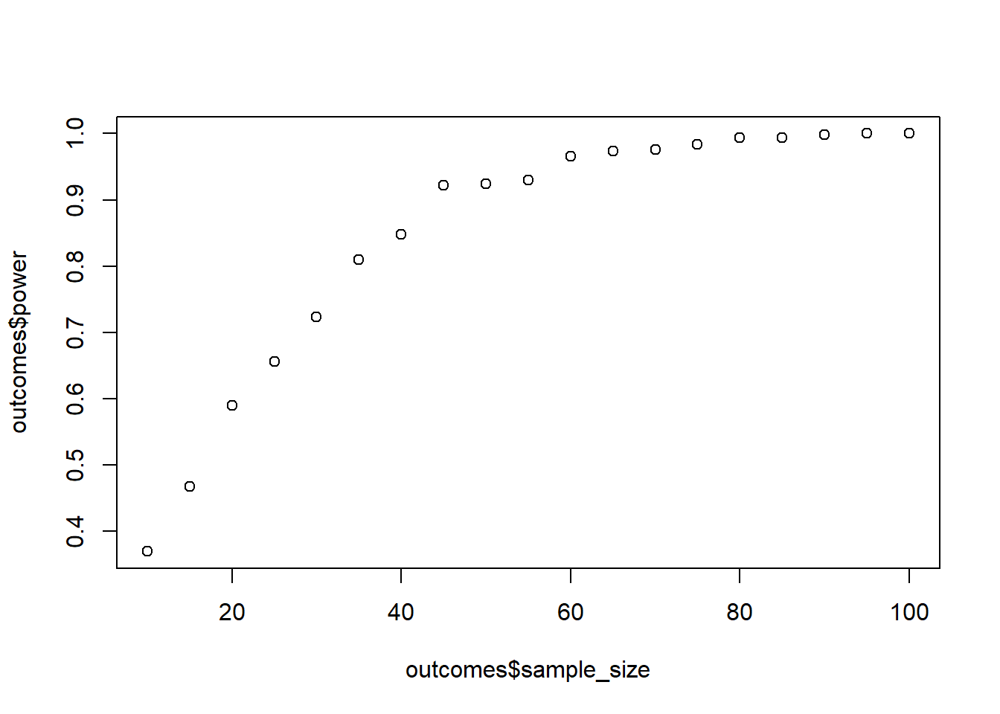
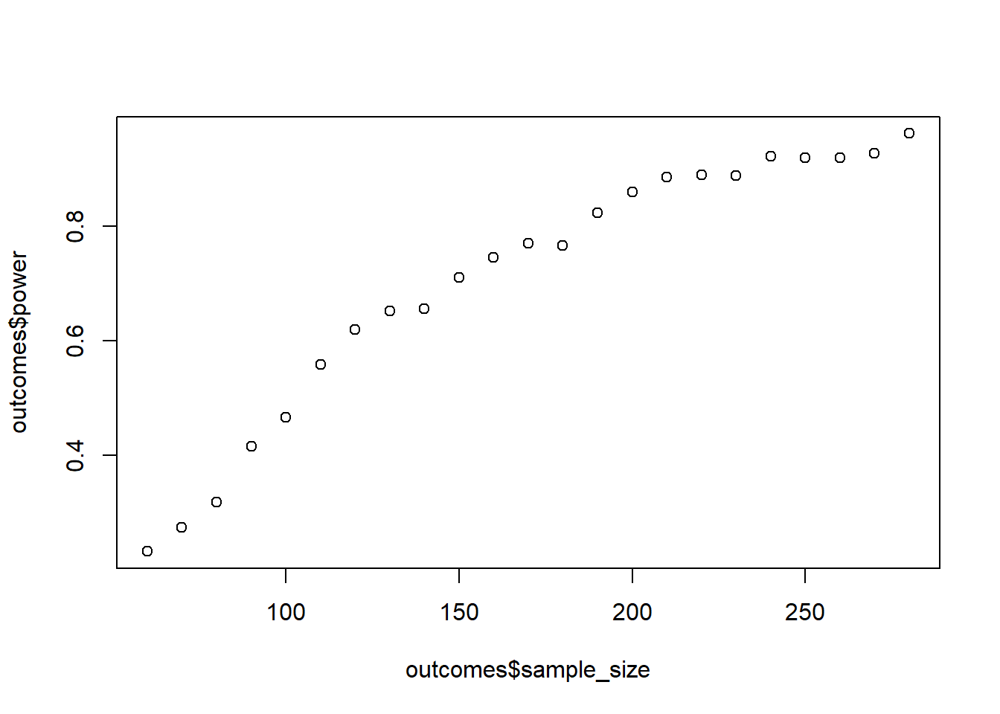
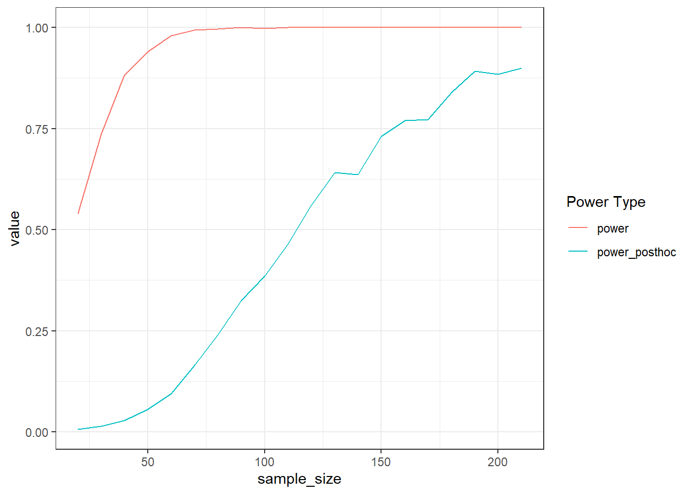

t1 <- Sys.time()
# wait a couple of seconds
t2 <- Sys.time()
t2-t1Exercise IV
Overview
Once more, this set of exercises won’t introduce new technical skills: You got everything you need for the most common designs. Here, you’ll dive deeper into simulating multiple groups and getting a better feel for how these comparisons work.
0.1 Exercise
ANOVAs are just linear models. There’s nothing wrong with using R’s aov command. In fact, it’s just a wrapper for lm. Type ?aov and convince yourself by reading the (short) description. There’s another reason why directly calling lm can be an advantage: efficiency. So far, we haven’t really cared much about the time our simulations take, but with more complicated designs (or more runs) it can easily take several hours, days, or even weeks.
Let’s see whether lm gives us an advantage. For that, we’ll need the Sys.time() command. It does exactly what it says: tells you the time of your computer system. When we store the time before and after a simulation, we can check how long it took and compare different functions.
Run the following to get familiar with how this works:
Now create a data frame with 4 (independent) groups whose means are c(4.2, 4.5, 4.6, 4.6) and their SDs are c(0.7, 0.8, 0.6, 0.5). The sample size is 240 (equal size in the groups). Check for an effect of condition on the outcome in 10,000 simulations. Do that once with aov and once with lm and measure how long it took. Are there differences? (Tip: Remember vectorization for rnorm to create the groups.)
set.seed(42)
means <- c(4.2, 4.5, 4.6, 4.6)
sd <- c(0.7, 0.8, 0.6, 0.5)
n <- 240
runs <- 1e4
# aov run
t1_aov <- Sys.time()
for (i in 1:runs) {
d <-
data.frame(
scores = rnorm(n, means, sd),
condition = rep(letters[1:4], n/4)
)
aov(scores ~ condition, d)
}
t2_aov <- Sys.time()
# lm run
t1_lm <- Sys.time()
for (i in 1:runs) {
d <-
data.frame(
scores = rnorm(n, means, sd),
condition = rep(letters[1:4], n/4)
)
lm(scores ~ condition, d)
}
t2_lm <- Sys.time()
aov_time <- t2_aov-t1_aov
lm_time <- t2_lm-t1_lm
aov_time-lm_timeTime difference of 2.933449 secs0.2 Exercise
Time to run a power analysis. You have 3 independent groups. Their means are c(5, 5.2, 5.6); the SD is constant: 1. Your minimum sample size is 120; your maximum sample size is 300. How large does your sample have to be for 95% power? Do 1,000 per run. Go in steps of 6 for the sample size (so increase 2 per group). (Tip: You can use seq and remember this link). This can take a minute.
means <- c(5, 5.2, 5.6)
sd <- 1
sizes <- seq(120, 300, 6)
runs <- 1e3
outcomes <-
data.frame(
sample_size = NULL,
power = NULL
)
for (n in sizes) {
pvalues <- NULL
for (i in 1:runs) {
d <-
data.frame(
scores = rnorm(n, means, sd),
condition = rep(letters[1:3], n/3)
)
m <- summary(lm(scores ~ condition, d))
pvalues[i] <- broom::glance(m)$p.value
}
outcomes <-
rbind(
outcomes,
data.frame(
sample_size = n,
power = sum(pvalues < 0.05) / length(pvalues)
)
)
}
plot(outcomes$sample_size, outcomes$power)
0.3 Exercise
Do the above again, but this time there’s no difference between the first two groups: c(5, 5, 5.6). What’s the effect on power if there’s a null effect for one contrast? Go in steps of 12 to speed it up.
means <- c(5, 5, 5.6)
sd <- 1
sizes <- seq(120, 300, 12)
runs <- 1e3
outcomes <-
data.frame(
sample_size = NULL,
power = NULL
)
for (n in sizes) {
pvalues <- NULL
for (i in 1:runs) {
d <-
data.frame(
scores = rnorm(n, means, sd),
condition = rep(letters[1:3], n/3)
)
m <- summary(lm(scores ~ condition, d))
pvalues[i] <- broom::glance(m)$p.value
}
outcomes <-
rbind(
outcomes,
data.frame(
sample_size = n,
power = sum(pvalues < 0.05) / length(pvalues)
)
)
}
plot(outcomes$sample_size, outcomes$power)
0.4 Exercise
Let’s try to work on the standardized scale. You again have 3 groups. Their SDs are c(2, 2.2, 1.8). Choose means such that the Cohen’s \(d\)s are as follows:
- Group 1 vs. Group 2: \(d\) = 0.2
- Group 1 vs. Group 3: \(d\) = 0.6
- Group 2 vs. Group 3: ?
Remember the formulate for Cohen’s \(d\): \(d = \frac{M_1-M_2}{\sqrt{\frac{(sd_1^2 + sd_2^2)}{2}}}\)
It might help to look at the previous exercises about choosing Cohen’s \(d\). Create the data frame and calculate power for samples ranging from 20 per group to 60 per group. Go in steps of 3 per group. Do 500 runs. Tip: You can choose means in relation to the pooled SD. Run effectsize::cohens_d() for each run (and contrast) and store the mean in your outcomes data frame. Plot the power, but also check the effect sizes for each contrast.
pooled_sd <-
function(sd1, sd2){
pooled_sd <- sqrt((sd1**2 + sd2**2) / 2)
return(pooled_sd)
}
sds <- c(2, 2.2, 1.8)
# pooled sd for first two combos (the third is implied when we determine the means)
g1_g2_sd <- pooled_sd(sds[1], sds[2])
g1_g3_sd <- pooled_sd(sds[1], sds[3])
# choose random mean for first group and other groups as proportion of the pooled SD. the last one, logically, has to be 0.4
m1 <- 10
m2 <- m1 + 0.2*g1_g2_sd
m3 <- m1 + 0.6*g1_g3_sd
means <- c(m1, m2, m3)
sizes <- seq(20*3, 60*3, 3*3)
runs <- 500
outcomes <-
data.frame(
sample_size = NULL,
power = NULL,
d12 = NULL,
d13 = NULL,
d23 = NULL
)
for (n in sizes) {
pvalues <- NULL
d12 <- NULL
d13 <- NULL
d23 <- NULL
for (i in 1:runs) {
d <-
data.frame(
scores = rnorm(n, means, sds),
condition = rep(letters[1:3], n/3)
)
m <- summary(lm(scores ~ condition, d))
pvalues[i] <- broom::glance(m)$p.value
# get cohen's for each contrast
d12[i] <- effectsize::cohens_d(d$scores[d$condition==letters[1]], d$scores[d$condition==letters[2]])$Cohens_d
d13[i] <- effectsize::cohens_d(d$scores[d$condition==letters[1]], d$scores[d$condition==letters[3]])$Cohens_d
d23[i] <- effectsize::cohens_d(d$scores[d$condition==letters[2]], d$scores[d$condition==letters[3]])$Cohens_d
}
outcomes <-
rbind(
outcomes,
data.frame(
sample_size = n,
power = sum(pvalues < 0.05) / length(pvalues),
d12 = mean(d12),
d13 = mean(d13),
d23 = mean(d23)
)
)
}
plot(outcomes$sample_size, outcomes$power)
mean(outcomes$d12);mean(outcomes$d13);mean(outcomes$d23)[1] -0.2022801[1] -0.6103061[1] -0.36664290.5 Exercise
So far, we’ve worked with dummy coding for our explanatory factor. That presumes that we’re interested in those contrasts where the second and third condition are compared to the first.
Sometimes, however, we’re not interested in these comparisons and would rather like to know the difference between our conditions and the grand mean. In that case, we should use sum to zero coding.
Take the data set below:
set.seed(42)
n <- 100
d <-
data.frame(
condition = as.factor(rep(letters[1:3], times = n)),
scores = rnorm(n*3, c(100, 150, 200), c(7, 10, 12))
)Let’s have a look at the contrasts:
contrasts(d$condition) b c
a 0 0
b 1 0
c 0 1It’s the familiar dummy coding. This means, going row by row, that the intercept will be the mean of condition a, the first contrast will be the mean of condition b in comparison to a, and the third contrast will be the mean of condition c in comparison to a.
Let’s have a look at contrast coding instead:
contrasts(d$condition) <- contr.sum
contrasts(d$condition) [,1] [,2]
a 1 0
b 0 1
c -1 -1Now the intercept is our grand mean (the overall mean of the outcome), the first contrast compares the score in condition a against the grand mean and the second contrast compares the mean of condition b against the grand mean.
summary(lm(scores~condition, d))
Call:
lm(formula = scores ~ condition, data = d)
Residuals:
Min 1Q Median 3Q Max
-32.364 -6.417 -0.009 6.081 26.953
Coefficients:
Estimate Std. Error t value Pr(>|t|)
(Intercept) 149.8348 0.5700 262.872 <2e-16 ***
condition1 -50.0140 0.8061 -62.045 <2e-16 ***
condition2 -0.6376 0.8061 -0.791 0.43
---
Signif. codes: 0 '***' 0.001 '**' 0.01 '*' 0.05 '.' 0.1 ' ' 1
Residual standard error: 9.873 on 297 degrees of freedom
Multiple R-squared: 0.946, Adjusted R-squared: 0.9456
F-statistic: 2600 on 2 and 297 DF, p-value: < 2.2e-16If we want a different comparison, we can reorder the factor levels:
d$condition <- factor(d$condition, levels = c("b", "c", "a"))
contrasts(d$condition) <- contr.sum
contrasts(d$condition) [,1] [,2]
b 1 0
c 0 1
a -1 -1Now the first contrasts compares condition b against the grand mean, and the second contrast compares condition c against the grand mean.
For later sessions on interactions, we’ll rely on this kind of sum-to-zero coding (also called effect coding), so let’s get familiar with it here. Create four groups: a placebo group, a low dose group, a medium dose group, and a high dose group.
You want to know whether the low dose, the medium dose, and the high dose are significantly different from the grand mean. Simulate a data set, set the contrasts, and run a linear model. Choose mean values as you like, but make sure you can find them again in the model output. How would you get the mean of the placebo group now? (Tip: Look at the contrasts, take the grand mean, and apply the contrasts to each estimate.)
n <- 50
d <-
data.frame(
condition = factor(rep(c("placebo", "low dose", "medium dose", "high dose"), times = n)),
scores = rnorm(n*4, c(10, 20, 30, 40), 2)
)
d$condition <- factor(d$condition, levels = c("low dose", "medium dose", "high dose", "placebo"))
contrasts(d$condition) <- contr.sum
contrasts(d$condition) [,1] [,2] [,3]
low dose 1 0 0
medium dose 0 1 0
high dose 0 0 1
placebo -1 -1 -1summary(lm(scores ~ condition, d))
Call:
lm(formula = scores ~ condition, data = d)
Residuals:
Min 1Q Median 3Q Max
-4.3991 -1.2198 -0.1447 1.3646 5.5612
Coefficients:
Estimate Std. Error t value Pr(>|t|)
(Intercept) 24.9151 0.1334 186.74 <2e-16 ***
condition1 -5.4787 0.2311 -23.71 <2e-16 ***
condition2 5.4555 0.2311 23.61 <2e-16 ***
condition3 14.9170 0.2311 64.55 <2e-16 ***
---
Signif. codes: 0 '***' 0.001 '**' 0.01 '*' 0.05 '.' 0.1 ' ' 1
Residual standard error: 1.887 on 196 degrees of freedom
Multiple R-squared: 0.9731, Adjusted R-squared: 0.9726
F-statistic: 2360 on 3 and 196 DF, p-value: < 2.2e-160.6 Exercise
You plan an experiment where you want to test the effect of framing on agreeing with a message. You run a within-person experiment where people read a text with either neutral, positive, or negative framing. Each person reads each text (so we have a within-subjects design) and rates their level of agreeing on a 7-point Likert-scale.
You determine that the smallest contrast you care about is 0.25 points between the neutral and the negative condition and between the neutral and the positive condition. You’ve found in previous testing that only such a difference on agreeing actually has an effect on behavior. That’s your SESOI.
You decide that the midpoint of the scale is a decent starting point for the neutral condition. The negative condition should be 0.25 points lower and the positive condition 0.25 points higher. You generally expect that the variation should be somewhere around 1 Likert-point; this way, most scores are within -2 and +2 from the mean. However, you know that negative framing usually increases variation, so you’ll set the SD for that score 30% higher.
The experiment takes place within 20 minutes, so you expect a decent amount of consistency in answers per participant: a person who generally agrees more should also agree more to all conditions. In other words, you set the correlation between scores to 0.6.
Last, you determined that you’re early in the research process, so you definitely don’t want to miss any effects (aka commit a Type II error). You also consider that a false positive won’t have any negative consequences. Therefore, you set your \(\alpha\) to 0.10.
You can afford to collect 100 participants in total. Simulate power (500 runs each); go in steps of 5 (start with 20). How many participants do you need for 95% power? Use contrast coding. (Tip: Draw the variance-covariance matrix first before coding it. It helps.) (Tip: Remember the data format the data have to be in. You’ll need to transform them.) (You might have to Google how to get the p-value out of aov.)
library(MASS)
library(tidyr)
means <- c(neutral = 4, negative = 3.75, positive = 4.25)
sd_neutral_po <- 1
sd_negative <- 1.3
correlation <- 0.6
sizes <- seq(10, 100, 5)
runs <- 500
alpha <- 0.10
# covariance for negative with the two others is identical because the sd for the other two is identical
cov_negative <- correlation * sd_neutral_po * sd_negative
cov_other <- correlation * sd_neutral_po * sd_neutral_po
our_matrix <- matrix(
c(
sd_neutral_po**2, cov_negative, cov_other,
cov_negative, sd_negative**2, cov_negative,
cov_other, cov_negative, sd_neutral_po**2
),
ncol = 3
)
outcomes <-
data.frame(
sample_size = NULL,
power = NULL
)
for (n in sizes) {
pvalues <- NULL
for (i in 1:runs) {
d <- mvrnorm(
n,
means,
our_matrix
)
d <- as.data.frame(d)
d$id <- factor(1:n)
d <- pivot_longer(
d,
cols = -id,
values_to = "scores",
names_to = "condition"
)
d$condition <- as.factor(d$condition)
contrasts(d$condition) <- contr.sum
m <- summary(aov(scores ~ condition + Error(id), d))
pvalues[i] <- unlist(m)["Error: Within.Pr(>F)1"]
}
outcomes <-
rbind(
outcomes,
data.frame(
sample_size = n,
power = sum(pvalues < alpha) / length(pvalues)
)
)
}
plot(outcomes$sample_size, outcomes$power)
0.7 Exercise
The previous study worked. Nice. Now you want to know whether positive framing scales: Can you reduce positivity and agreeing reduces proportionally? You run a follow-up experiment where you now have a neutral condition, a low positivity condition (half the positivity of your previous positive condition), and a high positivity condition (the positivity of your original positive condition). Your effect size remains: 0.25 for the comparison between neutral and high positivity (the original positive condition). You expect, therefore, that half the positivity should lead to half the effect size: 0.125. That’s your new SESOI.
The previous study also showed that you weren’t too far off with an SD of 1, but this time you’ll use 0.8 for all scores.
However, you expect that, because the two positivity conditions are so similar, they’ll correlate higher than the correlation between neutral and positivity. So you expect a correlation between neutral and either positivity condition to be 0.3, but 0.6 between the two positivity conditions.
Because your department was so happy with how well you designed the previous study, they gave you more money. Now you can collect a maximum of 500 participants. Last time, the power simulation took quite some time, so this time you want to stop whenever you reach 95% power. Also, because this time you want to be more stringent, you set \(\alpha\) to 0.01.
Do 500 runs, start with 60 people and go in in steps of 10. Use treatment contrasts. This can take a while.
library(MASS)
library(tidyr)
sesoi <- 0.125
means <- c(neutral = 4, low = 4+sesoi, high = 4+2*sesoi)
sd <- 0.8
cor_positive <- 0.6
cor_neutral <- 0.3
runs <- 500
alpha <- 0.01
max_n <- 500
steps <- 10
# covariance for negative with the two others is identical because the sd for the other two is identical
cov_positive <- cor_positive * sd * sd
cov_neutral <- cor_neutral * sd * sd
our_matrix <- matrix(
c(
sd**2, cov_neutral, cov_neutral,
cov_neutral, sd**2, cov_positive,
cov_neutral, cov_positive, sd**2
),
ncol = 3
)
outcomes <-
data.frame(
sample_size = NULL,
power = NULL
)
power <- 0
n <- 60
while (power < 0.95 & n <= max_n) {
pvalues <- NULL
for (i in 1:runs) {
d <- mvrnorm(
n,
means,
our_matrix
)
d <- as.data.frame(d)
d$id <- factor(1:n)
d <- pivot_longer(
d,
cols = -id,
values_to = "scores",
names_to = "condition"
)
d$condition <- as.factor(d$condition)
m <- summary(aov(scores ~ condition + Error(id), d))
pvalues[i] <- unlist(m)["Error: Within.Pr(>F)1"]
}
power <- sum(pvalues < alpha) / length(pvalues)
outcomes <-
rbind(
outcomes,
data.frame(
sample_size = n,
power = power
)
)
n <- n + steps
}
plot(outcomes$sample_size, outcomes$power)
0.8 Exercise
Usually when you run an ANOVA, you specify your contrasts before-hand so you know which groups you want to compare beyond just the overall effect of your condition. Let’s take the data set below. The overall effect of condition is significant:
library(MASS)
library(tidyr)
means <- c(neutral = 10, low = 12, high = 14)
sd <- 8
correlation <- 0.6
n <- 80
covariance <- correlation * sd * sd
sigma <- matrix(
c(
sd**2, covariance, covariance,
covariance, sd**2, covariance,
covariance, covariance, sd**2
),
ncol = 3
)
d <- data.frame(
mvrnorm(
n,
means,
sigma
)
)
d$id <- factor(1:n)
d <- pivot_longer(
d,
cols = -id,
values_to = "scores",
names_to = "condition"
)
d$condition <- as.factor(d$condition)
m <- aov(scores ~ condition + Error(id), d)
summary(m)
Error: id
Df Sum Sq Mean Sq F value Pr(>F)
Residuals 79 15120 191.4
Error: Within
Df Sum Sq Mean Sq F value Pr(>F)
condition 2 641 320.4 10.91 3.64e-05 ***
Residuals 158 4640 29.4
---
Signif. codes: 0 '***' 0.001 '**' 0.01 '*' 0.05 '.' 0.1 ' ' 1Let’s inspect the post-hoc comparisons between the groups with the emmeans package. Here, not every comparison is significant.
posthocs <- emmeans::emmeans(m, ~ condition)
posthocs condition emmean SE df lower.CL upper.CL
high 12.38 1.02 129 10.36 14.4
low 10.69 1.02 129 8.67 12.7
neutral 8.39 1.02 129 6.38 10.4
Warning: EMMs are biased unless design is perfectly balanced
Confidence level used: 0.95 pairs(posthocs) contrast estimate SE df t.ratio p.value
high - low 1.70 0.857 158 1.979 0.1208
high - neutral 3.99 0.857 158 4.654 <.0001
low - neutral 2.29 0.857 158 2.675 0.0224
P value adjustment: tukey method for comparing a family of 3 estimates Run a power simulation that finds the sample size for which we have 90% power for the smallest post-hoc contrast (aka the largest of the three p-values.) Go about it as you think is best, but save both the main effect p-value and the largest p-value of the posthoc contrasts to be able to compare power. In effect, you’re powering for a t-test, which only emphasizes that you should work on the raw scale and specify each comparison. (Tip: summary turns the pairs(postdocs) into a data frame.)
means <- c(neutral = 10, low = 12, high = 14)
sd <- 8
correlation <- 0.6
n <- 20
draws <- 1e3
covariance <- correlation * sd * sd
sigma <- matrix(
c(
sd**2, covariance, covariance,
covariance, sd**2, covariance,
covariance, covariance, sd**2
),
ncol = 3
)
outcomes <- data.frame(
sample_size = NULL,
power = NULL,
power_posthoc = NULL
)
power_posthoc <- 0
while (power_posthoc < .90) {
pvalues_posthoc <- NULL
pvalues <- NULL
for (i in 1:runs) {
d <- data.frame(
mvrnorm(
n,
means,
sigma
)
)
d$id <- factor(1:n)
d <- pivot_longer(
d,
cols = -id,
values_to = "scores",
names_to = "condition"
)
d$condition <- as.factor(d$condition)
m <- aov(scores ~ condition + Error(id), d)
pvalues[i] <- unlist(summary(m))["Error: Within.Pr(>F)1"]
posthocs <- suppressMessages(emmeans::emmeans(m, ~ condition))
outputs <- summary(pairs(posthocs))
pvalues_posthoc[i] <- max(outputs$p.value)
}
power <- sum(pvalues < 0.05) / length(pvalues)
power_posthoc <- sum(pvalues_posthoc < 0.05) / length(pvalues_posthoc)
outcomes <-
rbind(
outcomes,
data.frame(
sample_size = n,
power = power,
power_posthoc = power_posthoc
)
)
n <- n + 10
}
library(ggplot2)
outcomes %>%
pivot_longer(
cols = starts_with("power"),
names_to = "Power Type"
) %>%
ggplot(
aes(x = sample_size, y = value, color = `Power Type`)
) +
geom_line() + theme_bw()
0.9 Exercise
Rather than doing posthoc comparisons between each group, we can rely on planned contrasts. If that’s completely new to you, have a read here. The blog post does a really nice job explaining planned contrasts.
In effect, rather than relying on sum to zero or treatment coding, we create our own comparisons. Let’s say we want to compare neutral to both low positivity and high positivity (as a general test that framing works). Then, our second contrast compares the two framing conditions. For simplicity, let’s go three independent groups with means of c(4, 4.3, 4.4) and a common SD of 1.1. Custom contrasts will allow us to directly make the two comparisons we’re interested in like such:
d <- data.frame(
scores = rnorm(150, c(4., 4.3, 4.4), 1.1),
condition = factor(rep(c("neutral", "low", "high"), 50))
)
contrasts(d$condition) low neutral
high 0 0
low 1 0
neutral 0 1highlow_vs_neutral <- c(1, 1, -2)
high_vs_low <- c(1, -1, 0)
contrasts(d$condition) <- cbind(highlow_vs_neutral, high_vs_low)
contrasts(d$condition) highlow_vs_neutral high_vs_low
high 1 1
low 1 -1
neutral -2 0summary.lm(aov(scores ~ condition, d))
Call:
aov(formula = scores ~ condition, data = d)
Residuals:
Min 1Q Median 3Q Max
-3.3475 -0.6803 0.0627 0.6274 2.3525
Coefficients:
Estimate Std. Error t value Pr(>|t|)
(Intercept) 4.12649 0.08952 46.093 < 2e-16 ***
conditionhighlow_vs_neutral 0.28325 0.06330 4.474 1.52e-05 ***
conditionhigh_vs_low 0.08759 0.10964 0.799 0.426
---
Signif. codes: 0 '***' 0.001 '**' 0.01 '*' 0.05 '.' 0.1 ' ' 1
Residual standard error: 1.096 on 147 degrees of freedom
Multiple R-squared: 0.1232, Adjusted R-squared: 0.1113
F-statistic: 10.33 on 2 and 147 DF, p-value: 6.346e-05Run a power simulation where you first run standard treatment contrasts. Then, run posthoc tests (emmeans::emmeans) on that test. For simplicity, focus on the comparison of high vs. low. Select the p-value for that posthoc contrast. In the same run, change the contrasts to custom from above, run the model again, and extract the p-value for the high vs. low comparison. Do that for samples ranging from 50 to 200 in steps of 10. Do 200 runs to save a bit of time, then plot the two types of power against each other. Which approach is more “powerful”?
means <- c(4., 4.3, 4.6)
sd <- 1.1
runs <- 200
sizes <- seq(50, 200, 10)
outcomes <-
data.frame(
sample_size = NULL,
type = NULL,
power = NULL
)
for (n in sizes) {
pvalues_treatment <- NULL
pvalues_contrasts <- NULL
for (i in 1:runs) {
d <- data.frame(
scores = rnorm(n*3, means, 1.1),
condition = factor(rep(c("neutral", "low", "high"), n))
)
posthocs <- suppressMessages(emmeans::emmeans(lm(scores~condition, d), ~ condition))
outputs <- summary(pairs(posthocs))
pvalues_treatment[i] <- outputs[1,6]
highlow_vs_neutral <- c(1, 1, -2)
high_vs_low <- c(1, -1, 0)
contrasts(d$condition) <- cbind(highlow_vs_neutral, high_vs_low)
pvalues_contrasts[i] <- coefficients(summary(lm(scores~condition, d)))[3,4]
}
outcomes <-
rbind(
outcomes,
data.frame(
sample_size = c(n, n),
type = c("treatment", "contrasts"),
power = c(
sum(pvalues_treatment < 0.05) / length(pvalues_treatment),
sum(pvalues_contrasts < 0.05) / length(pvalues_contrasts)
)
)
)
}
ggplot(outcomes, aes(x = sample_size, y = power, color = type)) + geom_line() + theme_bw()